Detected genes and total molecule counts per cell
Po-Yuan Tung
2015-09-15
Last updated: 2016-02-17
Code version: 3db3cc8e2a02964e7e219887bc3a35d6f8c9d2b9
source("functions.R")
library("limma")
library("edgeR")
library("dplyr")
library(ggplot2)
theme_set(theme_bw(base_size = 16))From previous analysis, we found that 19098 has fewer reads but more molecules. One of the possible cause is that there are more lowly expressed genes being detected in 19098.
Prepare single cell molecule data
Input annotation
anno_filter <- read.table("../data/annotation-filter.txt", header = TRUE,
stringsAsFactors = FALSE)Input molecule counts
molecules_filter <- read.table("../data/molecules-filter.txt", header = TRUE,
stringsAsFactors = FALSE)Remove ERCC, keep only the endogenous genes
molecules_filter_ENSG <- molecules_filter[grep("ENSG", rownames(molecules_filter)),]
molecules_filter_ERCC <- molecules_filter[grep("ERCC", rownames(molecules_filter)),]
stopifnot(nrow(molecules_filter_ERCC) + nrow(molecules_filter_ENSG) == nrow(molecules_filter))standardization by cpm molecule counts
molecules_filter_ENSG_cpm <- cpm(molecules_filter_ENSG, log = TRUE)
molecules_filter_ERCC_cpm <- cpm(molecules_filter_ERCC, log = TRUE)Number of genes detected and total molecule counts in single cells
The number of genes (both endogenous genes and ERCC genes) per cell corelated with the the total molecule numbers. More total molecules, more genes. However, interestingly, 19098 have not only more total gene molecules and more detected genes but also more ERCC total molecules and more ERCC genes detected.
## number of genes detected in each cell
anno_filter$number_gene <- colSums(molecules_filter_ENSG > 0)
anno_filter$number_ERCC <- colSums(molecules_filter_ERCC > 0)
## number of total molecule counts in each cell
anno_filter$total_gene_molecule <- colSums(molecules_filter_ENSG)
anno_filter$total_ERCC_molecule <- colSums(molecules_filter_ERCC)
## plot
ggplot(anno_filter, aes(x = total_gene_molecule, y = number_gene, col = as.factor(individual), shape = as.factor(batch))) + geom_point(size = 3, alpha = 0.5) Warning: The shape palette can deal with a maximum of 6 discrete values
because more than 6 becomes difficult to discriminate; you have 8.
Consider specifying shapes manually. if you must have them.Warning: Removed 147 rows containing missing values (geom_point).Warning: The shape palette can deal with a maximum of 6 discrete values
because more than 6 becomes difficult to discriminate; you have 8.
Consider specifying shapes manually. if you must have them.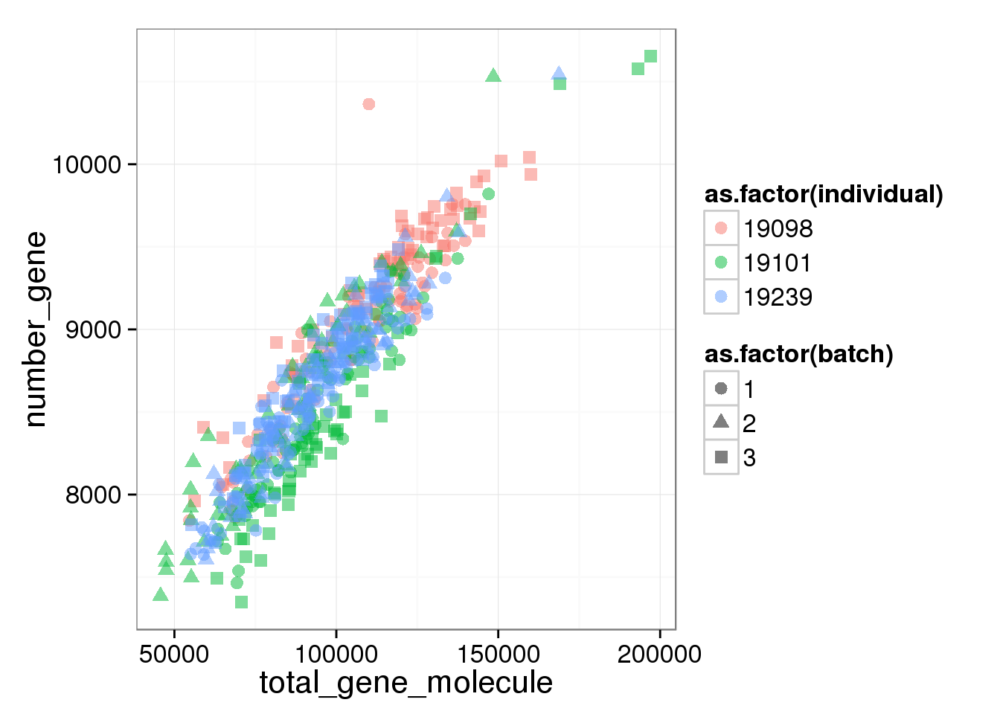
ggplot(anno_filter, aes(x = as.factor(individual), y = total_gene_molecule, fill = as.factor(batch))) + geom_violin(alpha = 0.5) + geom_boxplot(alpha = 0.01, width = 0.1, position = position_dodge(width = 0.9)) + labs( title = "total number of gene molecule counts")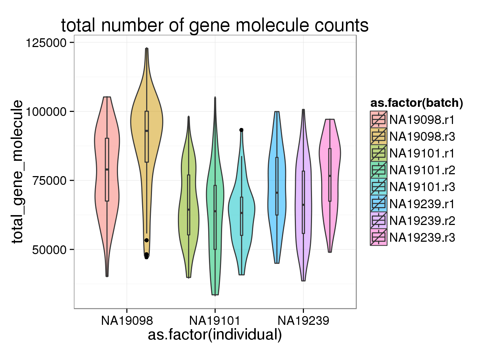
ggplot(anno_filter, aes(x = as.factor(individual), y = total_ERCC_molecule, fill = as.factor(batch))) + geom_violin(alpha = 0.5) + geom_boxplot(alpha = 0.01, width = 0.1, position = position_dodge(width = 0.9)) + labs( title = "total numer of ERCC molecule counts")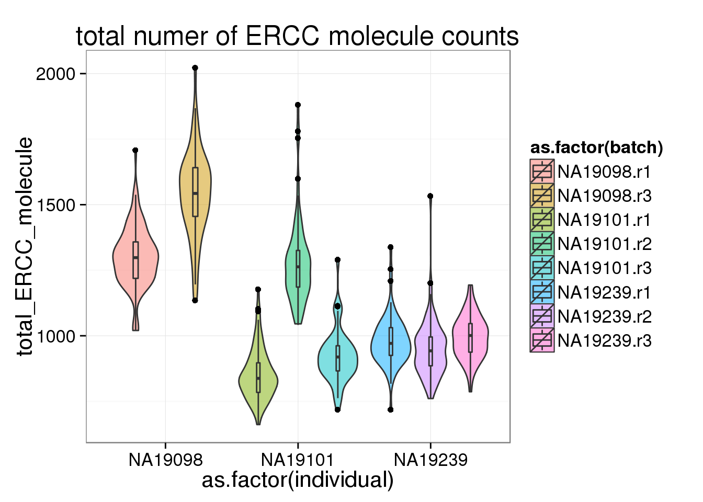
ggplot(anno_filter, aes(x = as.factor(individual), y = number_gene, fill = as.factor(batch))) + geom_violin(alpha = 0.5) + geom_boxplot(alpha = 0.1, width = 0.1, position = position_dodge(width = 0.9)) + labs( title = "number of endogenous genes detected")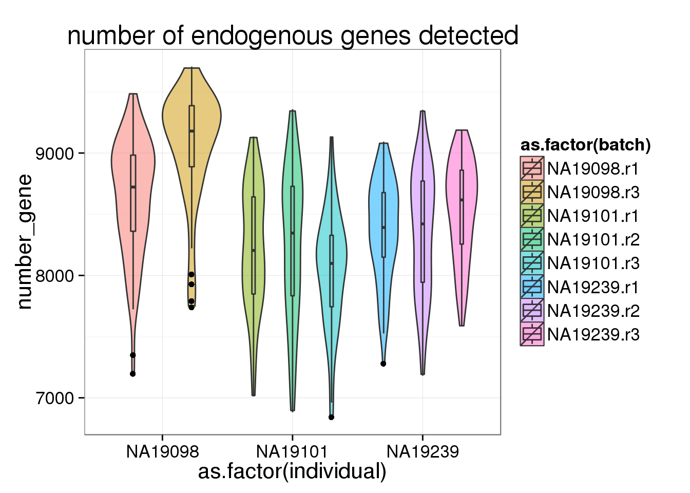
ggplot(anno_filter, aes(x = as.factor(individual), y = number_ERCC, fill = as.factor(batch))) + geom_violin(alpha = 0.5) + geom_boxplot(alpha = 0.1, width = 0.1, position = position_dodge(width = 0.9)) + labs( title = "number of ERCC genes detected")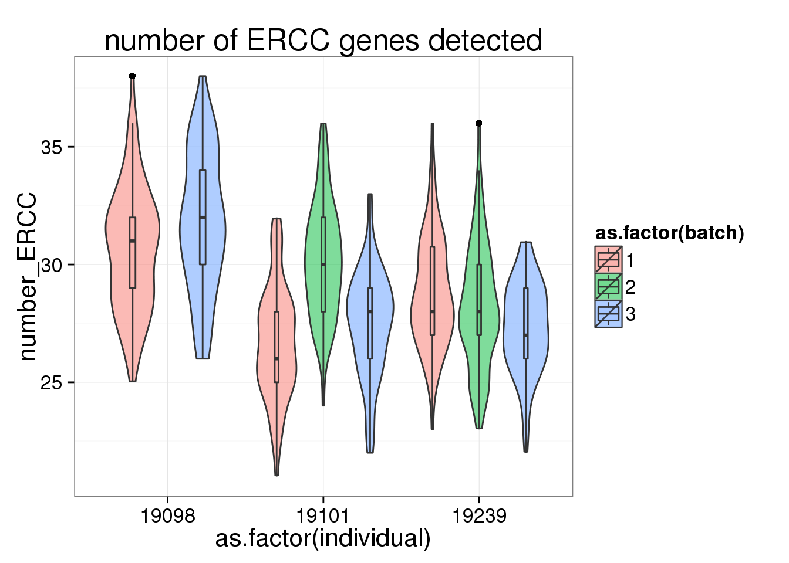
To standardized within each cell, cpm was done separately for endogenous genes and ERCCs. cpm does not seem to affect the endogenous genes, whereas cpm make the ERCC more similar across batch and also across individual, suggesting that the distribution of ERCC gene expression is similar across batch and across indiviual.
## number of total molecule counts in each cell AFTER cpm
anno_filter$total_gene_molecule_cpm <- colSums(molecules_filter_ENSG_cpm)
anno_filter$total_ERCC_molecule_cpm <- colSums(molecules_filter_ERCC_cpm)
ggplot(anno_filter, aes(x = as.factor(individual), y = total_gene_molecule_cpm, fill = as.factor(batch))) + geom_violin(alpha = 0.5) + geom_boxplot(alpha = 0.01, width = 0.1, position = position_dodge(width = 0.9)) + labs( title = "total gene molecule (cpm log)")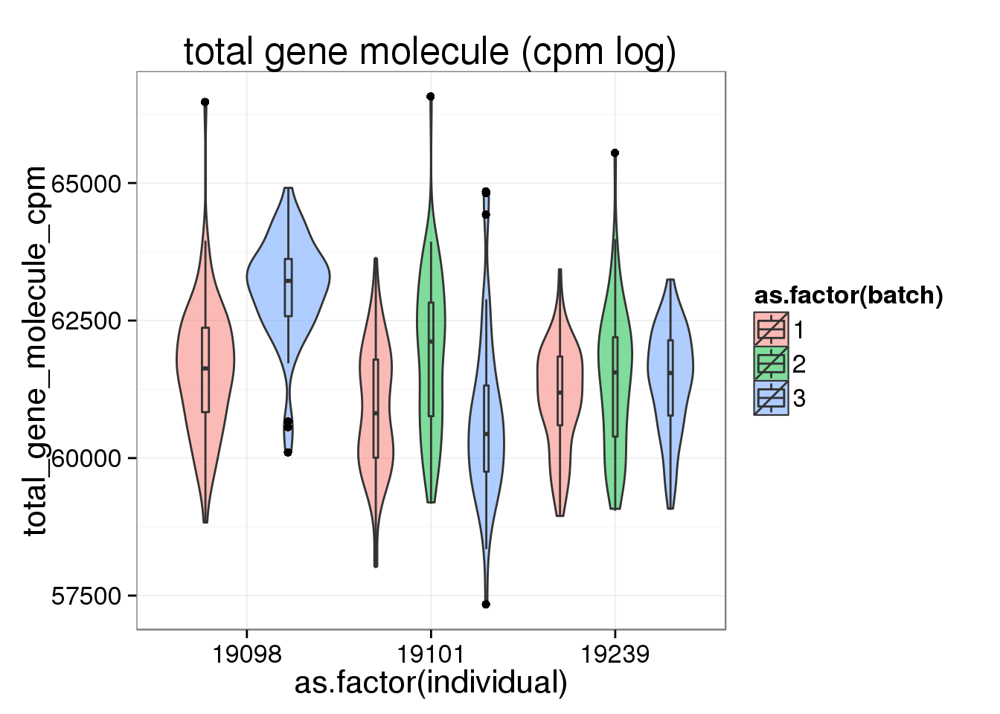
ggplot(anno_filter, aes(x = as.factor(individual), y = total_ERCC_molecule_cpm, fill = as.factor(batch))) + geom_violin(alpha = 0.5) + geom_boxplot(alpha = 0.01, width = 0.1, position = position_dodge(width = 0.9)) + labs( title = "total ERCC molecule (cpm log)")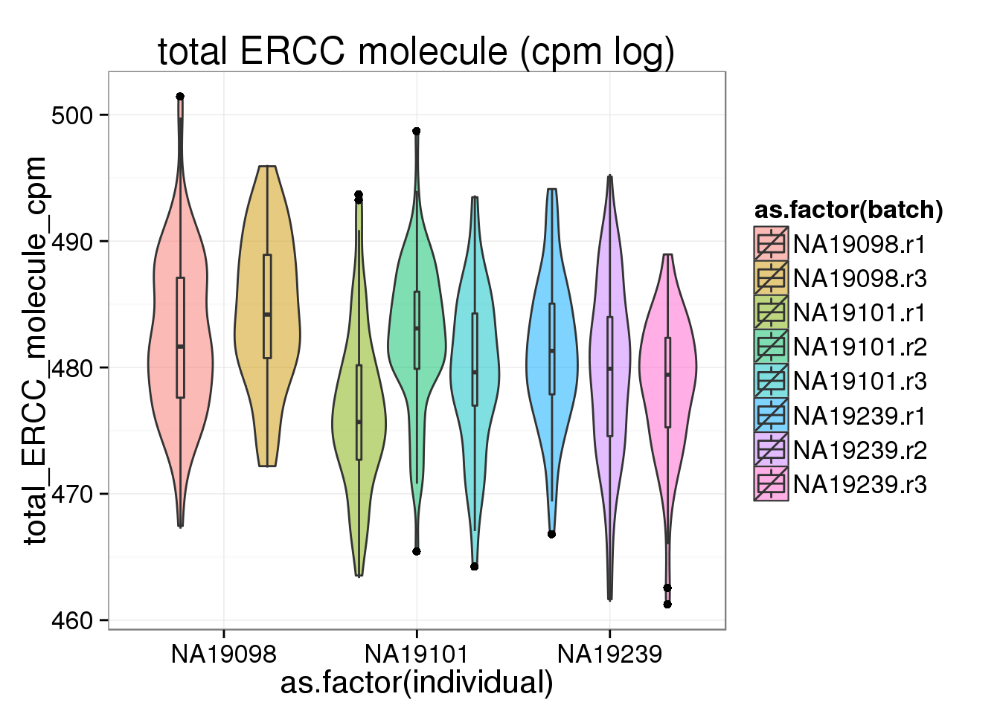
Distribution of molecule counts per gene in each individual
All endogenous genes
Do a density plot of molecule counts per gene per cell to see if 19098 have more lowly expressed genes. However, it’s very hard to visualize it.
## 19098 (total 142 cells)
molecules_filter_ENSG_19098 <- as.matrix(log(molecules_filter_ENSG[,grep("19098", colnames(molecules_filter_ENSG))]))
## 19101 (total 197 cells)
molecules_filter_ENSG_19101 <- as.matrix(log(molecules_filter_ENSG[,grep("19101", colnames(molecules_filter_ENSG))]))
## 19239 (total 197 cells)
molecules_filter_ENSG_19239 <- as.matrix(log(molecules_filter_ENSG[,grep("19239", colnames(molecules_filter_ENSG))]))
## plot all together
plot_multi_dens <- function(s)
{
junk.x = NULL
junk.y = NULL
for(i in 1:length(s)) {
junk.x = c(junk.x, density(s[[i]])$x)
junk.y = c(junk.y, density(s[[i]])$y)
}
xr <- range(junk.x)
yr <- range(junk.y)
plot(density(s[[1]]), xlim = xr, ylim = yr, main = "")
for(i in 1:length(s)) {
lines(density(s[[i]]), xlim = xr, ylim = yr, col = i)
}
}
plot_multi_dens(list(molecules_filter_ENSG_19098, molecules_filter_ENSG_19101, molecules_filter_ENSG_19239))
legend(5, 0.7, c("19098","19101", "19239"), lwd=c(2.5,2.5),col=c("black", "red", "green"))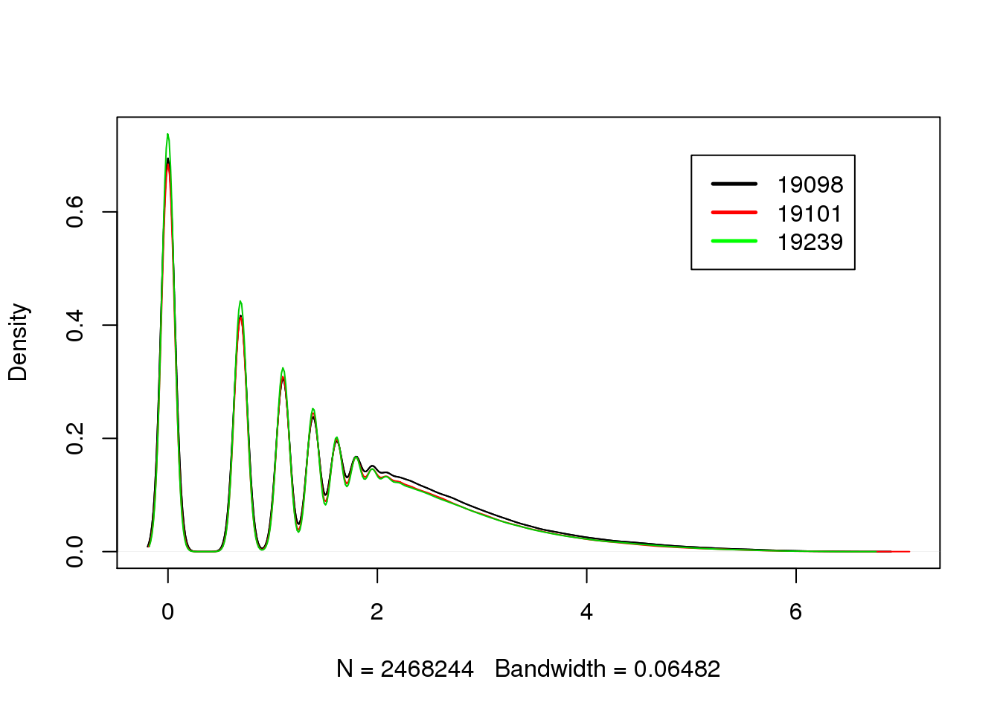
# Not sure how to fix the following code. These vectors do not exist. -John
#
# ## ggplot
# v_19098 <- as.vector(molecules_filter_cpm_19098)
# v_19239 <- as.vector(molecules_filter_cpm_19239)
# v_19101 <- as.vector(molecules_filter_cpm_19101)
#
# data_cpm <- as.data.frame(cbind(counts=c(v_19098,v_19239,v_19101),individual=rep(c("19098","19239","19101"),c(length(v_19098),length(v_19239),length(v_19101)))))
#
# data_cpm$counts <- as.numeric(as.character(data_cpm$counts))
#
# ggplot(data_cpm, aes(x = counts, col = individual)) + geom_density() + labs(title="molecule per gene per cell")Top 5000 genes
There is some difference before cpm, but the distribution matched perfectly after cpm. However, surprisingly, not all top 5000 genes are expressed in cells.
## calculate total and select the top 5000
molecules_filter_ENSG$total <- apply(molecules_filter_ENSG, 1, sum)
molecules_filter_ENSG_top <- molecules_filter_ENSG %>% arrange(desc(total)) %>%
slice(1:5000) %>% select(-total)
## number of gene detected
anno_filter$number_gene_top <- colSums(molecules_filter_ENSG_top > 0)
ggplot(anno_filter, aes(x = as.factor(individual), y = number_gene_top, fill = as.factor(batch))) + geom_violin(alpha = 0.5) + geom_boxplot(alpha = 0.01, width = 0.1, position = position_dodge(width = 0.9)) + labs( title = "number of gene detected (top 5000)")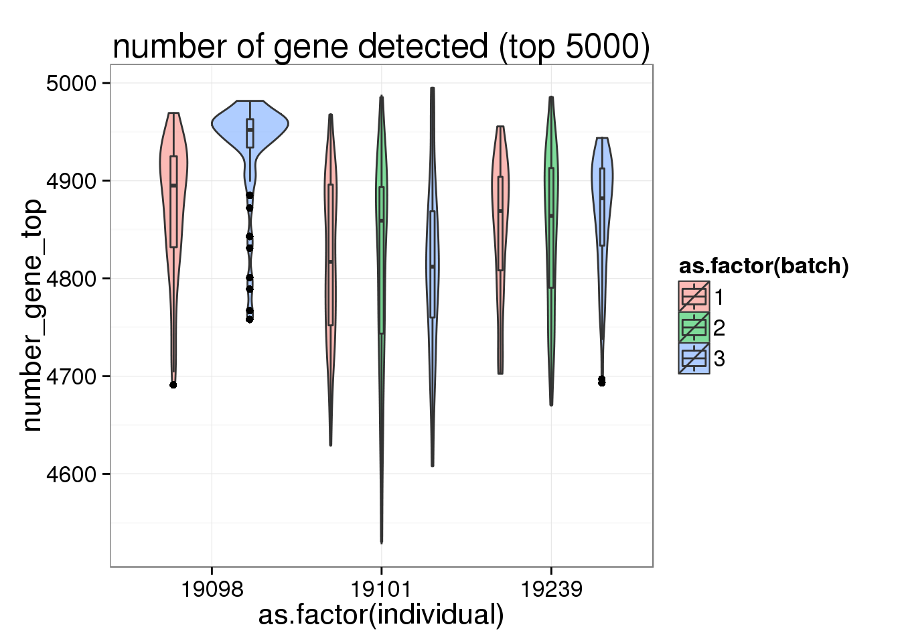
## divided by individual
molecules_filter_ENSG_top_19098 <- as.matrix(log(molecules_filter_ENSG_top[,grep("19098", colnames(molecules_filter_ENSG_top))]))
molecules_filter_ENSG_top_19101 <- as.matrix(log(molecules_filter_ENSG_top[,grep("19101", colnames(molecules_filter_ENSG_top))]))
molecules_filter_ENSG_top_19239 <- as.matrix(log(molecules_filter_ENSG_top[,grep("19239", colnames(molecules_filter_ENSG_top))]))
plot_multi_dens(list(molecules_filter_ENSG_top_19098, molecules_filter_ENSG_top_19101, molecules_filter_ENSG_top_19239))
legend(5.5 ,0.4, c("19098","19101", "19239"), lwd=c(2.5,2.5),col=c("black", "red", "green"))
title("molecule per gene top 5000 genes (counts)")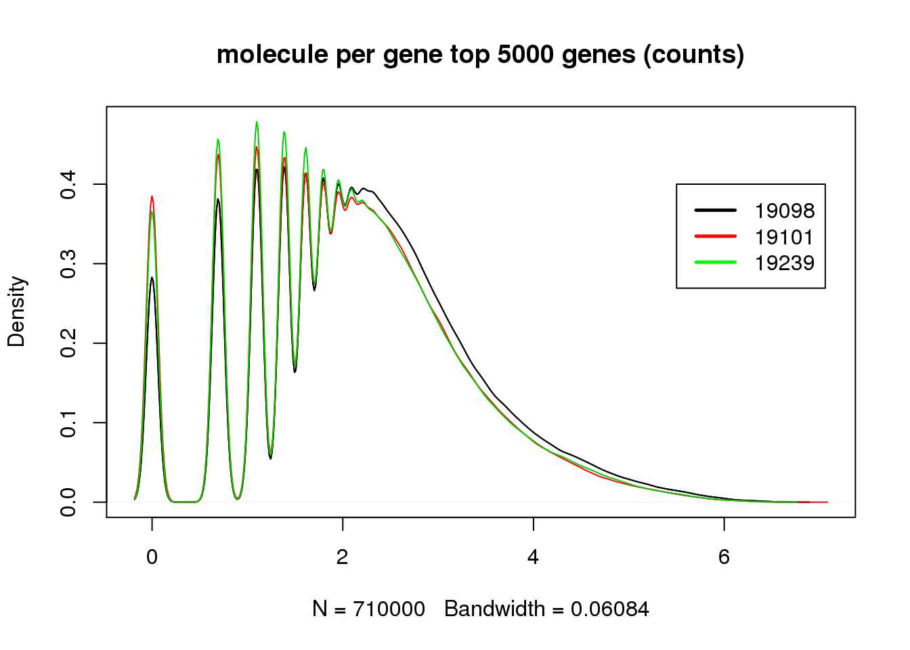
## calculate total and select the top 5000 with cpm
molecules_filter_ENSG_cpm <- as.data.frame(molecules_filter_ENSG_cpm)
molecules_filter_ENSG_cpm$total <- apply(molecules_filter_ENSG_cpm, 1, sum)
molecules_filter_ENSG_cpm_top <- molecules_filter_ENSG_cpm %>% arrange(desc(total)) %>%
slice(1:5000) %>% select(-total)
stopifnot(rownames(molecules_filter_ENSG_top) == rownames(molecules_filter_ENSG_cpm_top))
## divided by individual
molecules_filter_ENSG_cpm_top_19098 <- as.matrix(molecules_filter_ENSG_cpm_top[,grep("19098", colnames(molecules_filter_ENSG_cpm_top))])
molecules_filter_ENSG_cpm_top_19101 <- as.matrix(molecules_filter_ENSG_cpm_top[,grep("19101", colnames(molecules_filter_ENSG_cpm_top))])
molecules_filter_ENSG_cpm_top_19239 <- as.matrix(molecules_filter_ENSG_cpm_top[,grep("19239", colnames(molecules_filter_ENSG_cpm_top))])
plot_multi_dens(list(molecules_filter_ENSG_cpm_top_19098, molecules_filter_ENSG_cpm_top_19098, molecules_filter_ENSG_cpm_top_19098))
legend(9, 0.25, c("19098","19101", "19239"), lwd=c(2.5,2.5),col=c("black", "red", "green"))
title("molecule per gene top 5000 genes (cpm log)")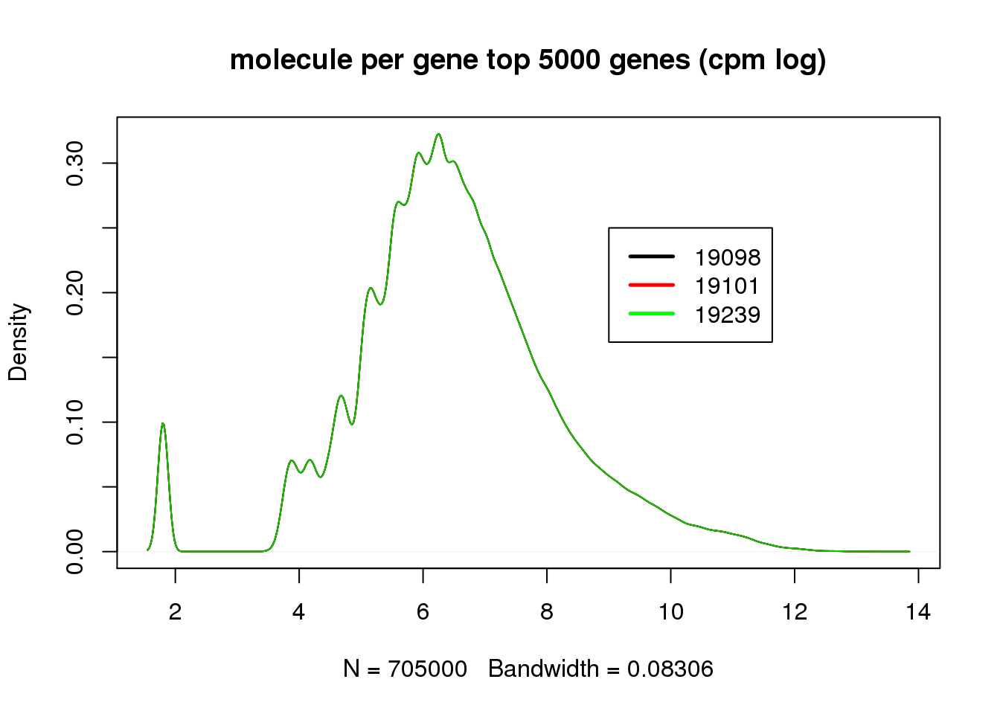
## total molecule number
anno_filter$total_gene_molecule_top <- colSums(molecules_filter_ENSG_top)
ggplot(anno_filter, aes(x = as.factor(individual), y = total_gene_molecule_top, fill = as.factor(batch))) + geom_violin(alpha = 0.5) + geom_boxplot(alpha = 0.01, width = 0.1, position = position_dodge(width = 0.9)) + labs( title = "total gene molecule top 5000")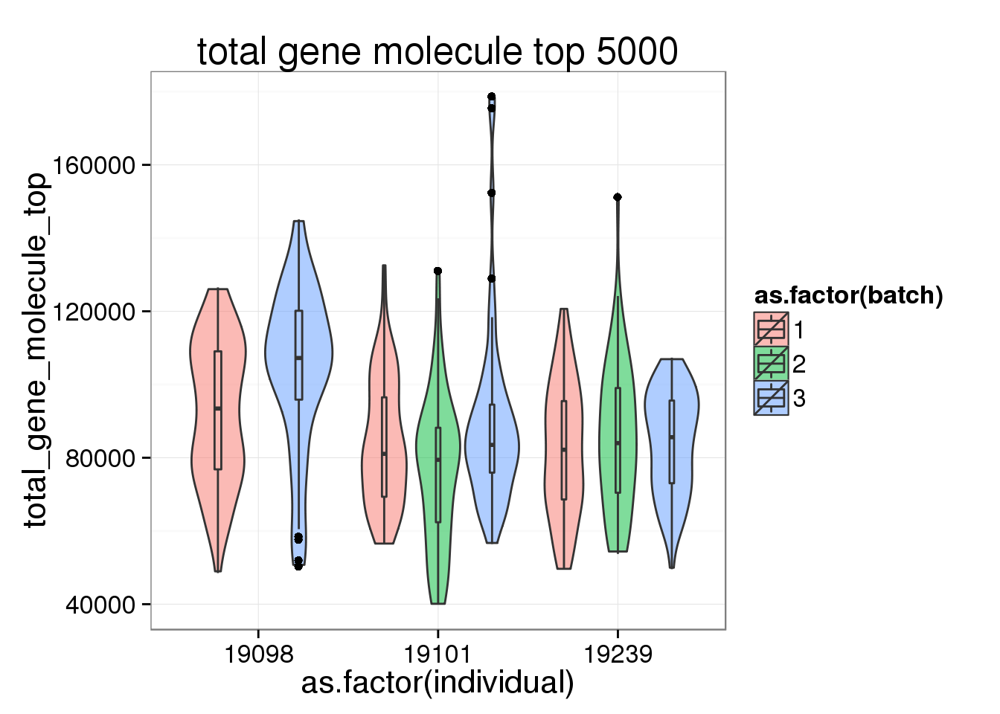
anno_filter$total_gene_molecule_cpm_top <- colSums(molecules_filter_ENSG_cpm_top)
ggplot(anno_filter, aes(x = as.factor(individual), y = total_gene_molecule_cpm_top, fill = as.factor(batch))) + geom_violin(alpha = 0.5) + geom_boxplot(alpha = 0.01, width = 0.1, position = position_dodge(width = 0.9)) + labs( title = "total gene molecule top 5000 (cpm log)")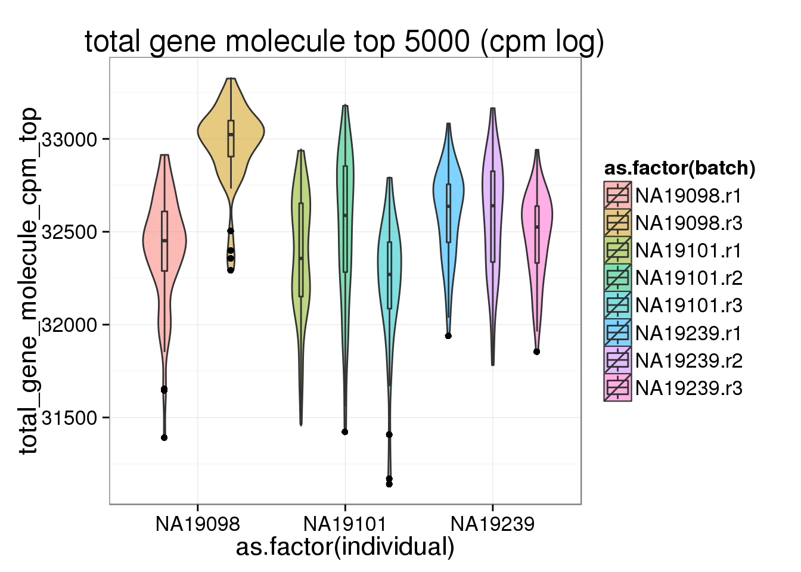
Bottom 5000 genes
As exprected, more genes have only 1 molecule in 19098 than the other 2 individuals.
## select the bottom 5000
molecules_filter_ENSG_bottom <- molecules_filter_ENSG %>% arrange(total) %>%
slice(1:5000) %>% select(-total)
## number of gene detected
anno_filter$number_gene_bottom <- colSums(molecules_filter_ENSG_bottom > 0)
ggplot(anno_filter, aes(x = as.factor(individual), y = number_gene_bottom, fill = as.factor(batch))) + geom_violin(alpha = 0.5) + geom_boxplot(alpha = 0.01, width = 0.1, position = position_dodge(width = 0.9)) + labs( title = "number of gene detected (bottom 5000)")
## divided by individual
molecules_filter_ENSG_bottom_19098 <- as.matrix(log(molecules_filter_ENSG_bottom[,grep("19098", colnames(molecules_filter_ENSG_bottom))]))
molecules_filter_ENSG_bottom_19101 <- as.matrix(log(molecules_filter_ENSG_bottom[,grep("19101", colnames(molecules_filter_ENSG_bottom))]))
molecules_filter_ENSG_bottom_19239 <- as.matrix(log(molecules_filter_ENSG_bottom[,grep("19239", colnames(molecules_filter_ENSG_bottom))]))
plot_multi_dens(list(molecules_filter_ENSG_bottom_19098, molecules_filter_ENSG_bottom_19101, molecules_filter_ENSG_bottom_19239))
legend(2.5, 0.2, c("19098","19101", "19239"), lwd=c(2.5,2.5),col=c("black", "red", "green"))
title("molecule counts per gene")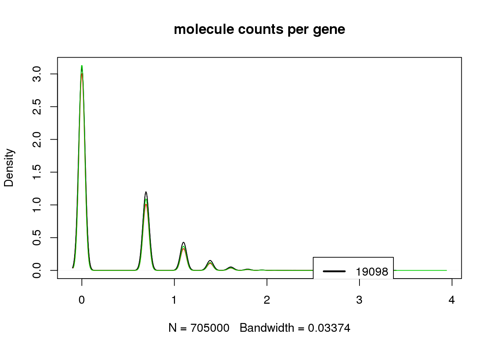
## the bottom 5000 with cpm
molecules_filter_ENSG_cpm_bottom <- molecules_filter_ENSG_cpm %>% arrange(total) %>%
slice(1:5000) %>% select(-total)
stopifnot(rownames(molecules_filter_ENSG_bottom) == rownames(molecules_filter_ENSG_cpm_bottom))
## divided by individual
molecules_filter_ENSG_cpm_bottom_19098 <- as.matrix(molecules_filter_ENSG_cpm_bottom[,grep("19098", colnames(molecules_filter_ENSG_cpm_bottom))])
molecules_filter_ENSG_cpm_bottom_19101 <- as.matrix(molecules_filter_ENSG_cpm_bottom[,grep("19101", colnames(molecules_filter_ENSG_cpm_bottom))])
molecules_filter_ENSG_cpm_bottom_19239 <- as.matrix(molecules_filter_ENSG_cpm_bottom[,grep("19239", colnames(molecules_filter_ENSG_cpm_bottom))])
plot_multi_dens(list(molecules_filter_ENSG_cpm_bottom_19098, molecules_filter_ENSG_cpm_bottom_19098, molecules_filter_ENSG_cpm_bottom_19098))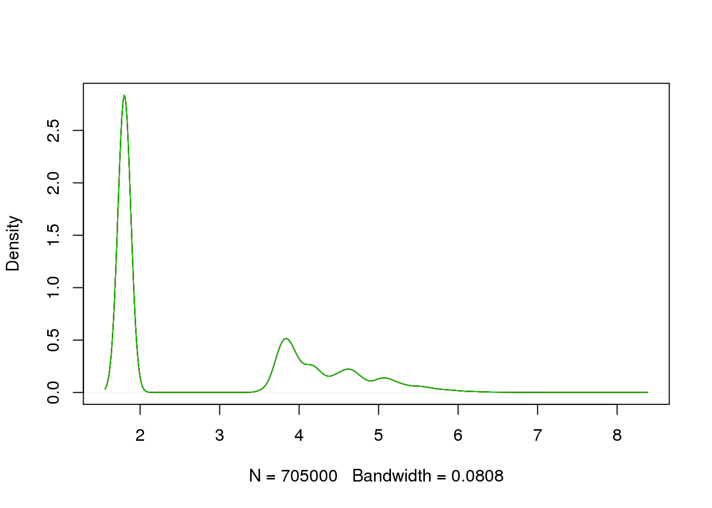
## total molecule number
anno_filter$total_gene_molecule_bottom <- colSums(molecules_filter_ENSG_bottom)
ggplot(anno_filter, aes(x = as.factor(individual), y = total_gene_molecule_bottom, fill = as.factor(batch))) + geom_violin(alpha = 0.5) + geom_boxplot(alpha = 0.01, width = 0.1, position = position_dodge(width = 0.9)) + labs( title = "total gene molecule bottom 5000")
anno_filter$total_gene_molecule_cpm_bottom <- colSums(molecules_filter_ENSG_cpm_bottom)
ggplot(anno_filter, aes(x = as.factor(individual), y = total_gene_molecule_cpm_bottom, fill = as.factor(batch))) + geom_violin(alpha = 0.5) + geom_boxplot(alpha = 0.01, width = 0.1, position = position_dodge(width = 0.9)) + labs( title = "total gene molecule bottom 5000 (cpm log)")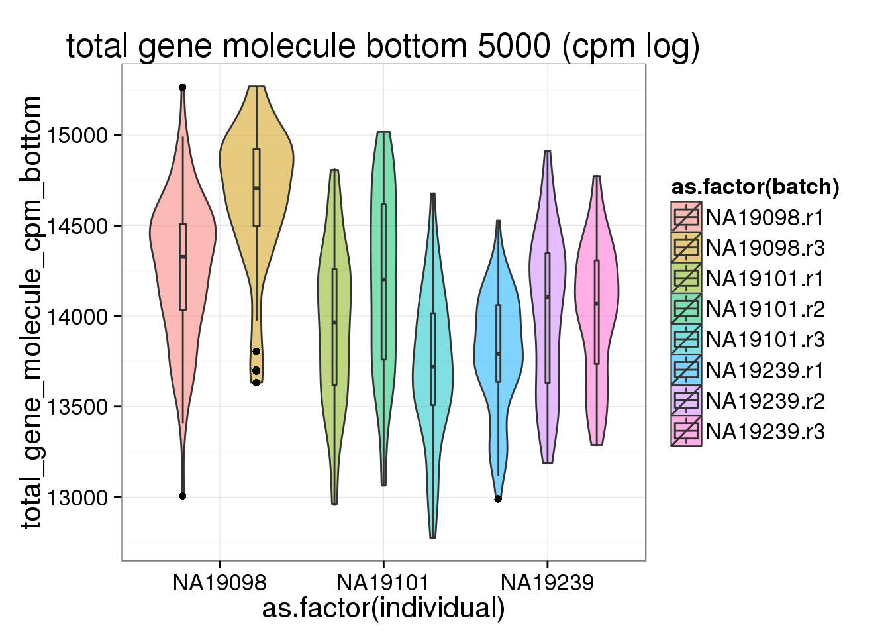
Median molecule counts per gene of the same individual
## with cpm
molecules_counts_per_gene_19098_cpm <- apply(molecules_filter_ENSG_19098, 1, median)
molecules_counts_per_gene_19101_cpm <- apply(molecules_filter_ENSG_19101, 1, median)
molecules_counts_per_gene_19239_cpm <- apply(molecules_filter_ENSG_19239, 1, median)
## plot
plot_multi_dens(list(molecules_counts_per_gene_19098_cpm, molecules_counts_per_gene_19101_cpm, molecules_counts_per_gene_19239_cpm))
legend(5, 0.25 , c("19098","19101", "19239"), lwd=c(2.5,2.5),col=c("black", "red", "green"))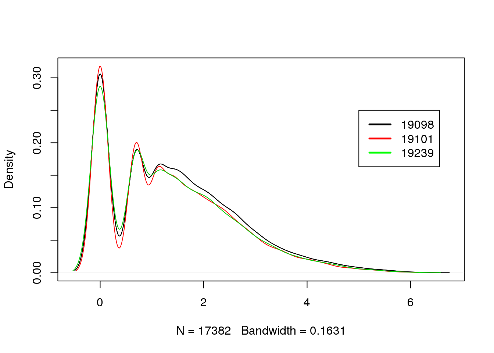
Session information
sessionInfo()R version 3.2.0 (2015-04-16)
Platform: x86_64-unknown-linux-gnu (64-bit)
locale:
[1] LC_CTYPE=en_US.UTF-8 LC_NUMERIC=C
[3] LC_TIME=en_US.UTF-8 LC_COLLATE=en_US.UTF-8
[5] LC_MONETARY=en_US.UTF-8 LC_MESSAGES=en_US.UTF-8
[7] LC_PAPER=en_US.UTF-8 LC_NAME=C
[9] LC_ADDRESS=C LC_TELEPHONE=C
[11] LC_MEASUREMENT=en_US.UTF-8 LC_IDENTIFICATION=C
attached base packages:
[1] stats graphics grDevices utils datasets methods base
other attached packages:
[1] ggplot2_1.0.1 dplyr_0.4.2 edgeR_3.10.2 limma_3.24.9 knitr_1.10.5
loaded via a namespace (and not attached):
[1] Rcpp_0.12.0 magrittr_1.5 MASS_7.3-40 munsell_0.4.2
[5] colorspace_1.2-6 R6_2.1.1 stringr_1.0.0 httr_0.6.1
[9] plyr_1.8.3 tools_3.2.0 parallel_3.2.0 grid_3.2.0
[13] gtable_0.1.2 DBI_0.3.1 htmltools_0.2.6 lazyeval_0.1.10
[17] yaml_2.1.13 digest_0.6.8 assertthat_0.1 reshape2_1.4.1
[21] formatR_1.2 bitops_1.0-6 RCurl_1.95-4.6 evaluate_0.7
[25] rmarkdown_0.6.1 labeling_0.3 stringi_0.4-1 scales_0.2.4
[29] proto_0.3-10